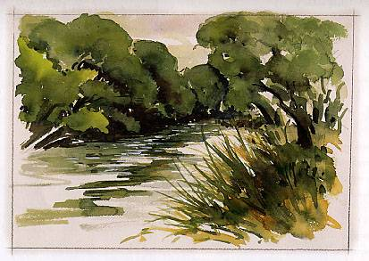
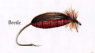
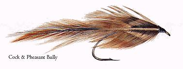
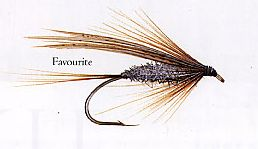
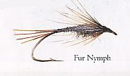
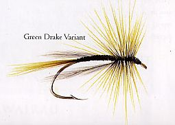
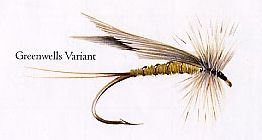
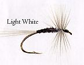
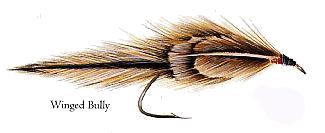

ティップス
５月 JOHN K. GILL 氏 WAIMAKARIRI 川 南側支流









フライタイヤー JOHN K. GILL 氏 の紹介
1949年にインバーカーギルに生まれたジョン・ギル氏はその少年期を、父のあとについて数多くのサウスランド地方の川を巡って過ごしました。中でもヘッジホープ川（Hedgehope）とマカレワ川（Makarewa）は彼のお気に入りであった。また、オレティ川（Oreti）上流域にあるマラロア川（Mararoa）と、隣接する同名のいくつかの湖は、彼が足しげく通った釣り場であったが、成長するにつれて彼は平野部の渓流や河川を好むようになった。
“クルーサ川上流部（The upper Clutha）はもう20年も私にとっての聖地になっているんだ。そこは私の釣りの体験における心のふるさとで、夕暮れ時に、雄大なクルーサの流れのほとりでコチー（cochy's）やラブ（Love's）といったディアーヘアーパターンのストリーマーが、レインボーやブラウン達を隠れ家から誘い出したのは懐かしい想い出だね。”
ジョンは釣り文学に造詣が深いが、こうも言っている。“私は釣りに関する書物の影響や重要性を認めているが、その一方で、私の釣りのスタイルと言えば、自分自身による発見とやってみて成功した事柄の応用を単純に反映したものなんだ。”
彼は15年前にクライストチャーチに転居し、そこで新しい釣り場を見つけたが、今でもクルーサ川やサウスランド地方の川と渓流を想い慕っており、時折それらを再訪している。
“私にとって釣りは、今ではよりいっそう重要になっている。釣りを巡る環境問題がいくつもあり、それらの事情が考慮されなければならない。釣りは、経済的な便益と、レクリエーションの必要性とを結ぶ架け橋となってくれる。河川は大地に必要な活力源であり、私達がそのことを理解し、河川保護を確実なものにする限り、釣り人を始めとするすべての水辺の利用者は川の恵みを享受できるだろう。”
これらの記事・画像の著作権は、Michael Scheele 氏 にあります。無断での転載・二次利用をお断りいたします。
NZ釣行に向けてのフライタイイング へ
ティップス 目次へ
サイトマップ
ホームへ
お問い合わせ